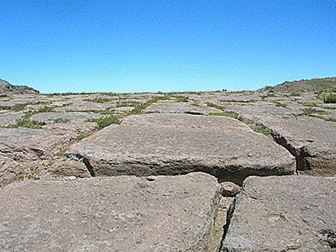
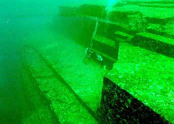

De
reuzen waren op de aarde.
Door:
Franklin ter Horst. (Aangemaakt 1989) (Laatste bewerking: 9 februari 2023)
Genesis 6:1-4 Toen de mensen zich op
aarde begonnen te vermenigvuldigen en hun dochters geboren werden, zagen de
zonen Gods, dat de dochters der mensen schoon waren, en zij namen zich daaruit
vrouwen, wie zij maar verkozen.En de Here zeide: Mijn Geest zal niet altoos in de mens blijven, nu zij zich misgaan hebben; hij
is vlees, zijn dagen zullen 120 jaar zijn. De reuzen waren in die dagen op de
aarde, en ook daarna toen de zonen Gods tot de dochters der mensen kwamen, en
zij hun (kinderen) baarden; dit zijn de geweldigen uit de voortijd mannen van
naam.
In deze korte maar betekenisvolle bewoordingen spreekt de Bijbel over de Zonen Gods, de Nephilim. Zie ook: Goden van Licht en Duisternis? Nephilim is afgeleid van naphal ‘vallen’, en betekent letterlijk: ‘de gevallenen’. Een uitvoerige beschrijving is terug te vinden in het Boek van Henoch waar de Bijbel in positieve zin naar verwijst. De reuzen duiken op in de verhalen van alle oude volken op aarde. Rond de Middellandse-zee, bij de indianen in Noord-Amerika en Canada, in Zuid-Amerika, in Tibet en in Australië. In de mythologieën van Oost en West in de sagen over Tiahuanacu en in de heldendichten van de Noormannen en Eskimo’s. De oude Chaldeeën hadden het over de reus Irdubar, in India sprak men van de Danawa en Daita en op Ceylon van Rakshasa, om zo maar een paar voorbeelden te noemen. Vertegenwoordigen zij simpelweg het verlangen van de menselijke geest naar bovennatuurlijke kracht, of hebben zij echt bestaan?
Ethiopische uitgave van het boek van
Henoch.De Kebra Negast
Een aantal wetenschappers die zich in het fenomeen van de reuzen verdiept hebben kwamen met de verklaring dat er geen reuzen op aarde zijn geweest. De reusachtige megalithische bouwwerken waren het werk van gewone mensen geweest. Deze hadden- weliswaar met de nodige moeite- de enorme steenkoolossen met vuistbijlen uit de rotsen gehakt en met houten hefbomen en rollers naar de plaats van bestemming gebracht. Er zijn ook geleerden die wel geloven dat er reuzen op aarde hebben rondgelopen. Echter niet in de tijd waarover de Bijbel en andere oude geschriften berichten, maar ten tijde van de reuzenreptielen zo’n 135 miljoen jaar geleden. Zij schrijven de reusachtige vormen toe aan kosmische stralen van de zon of aan een vergrote aantrekkingskracht van de maan waardoor de mensen een lengte bereikten van wel vijf meter. Het merkwaardige fenomeen van de abnormale groei zou zijn opgehouden toen de maan een andere positie tegenover de aarde was gaan innemen, miljoenen jaren geleden.
Dit soort verklaringen zijn echter op geen enkele wijze in overeenstemming met wat er zich werkelijk op aarde heeft afgespeeld. De reuzen waren op de aarde, geen miljoenen jaren geleden, maar vrij recent, in Bijbelse tijden. Wetenschappers van de Universiteit van Washington zeggen bewijs te hebben gevonden voor 'vreemd DNA' in de menselijke bevolking. Het vreemde DNA werd aangetroffen in drie groepen moderne Afrikanen. Het betreft genetische 'resten' die op geen enkele wijze overeenkomen met het DNA van moderne mensen en ook niet met dat van de Neanderthalers, wier DNA nog terug te vinden is in sommige hedendaagse Europese volken.Men is van mening dat gevallen engelen (nephilim) hier verantwoordelijk voor zijn. Zij mengden hun eigen DNA met dat van de mensen en produceerden zo een niet-menselijke tussensoort.
 Reuzen schedel opgegraven in Peru
Reuzen schedel opgegraven in Peru
Verschillende overleveringen vertellen dat de eerste reuzen goede wezens waren maar dat door een snelle degeneratie het kwade snel de overhand had gekregen. Dat zou de reden kunnen zijn waarom ze dikwijls in oude geschriften als kwaadaardig worden afgebeeld, vijanden van de mensen maar soms ook van elkaar. In de Scandinavische mythologie bijvoorbeeld, zijn de reuzen die in Utgard wonen de aartsvijanden van de in Asgard verblijvende reuzen. Ze veroorzaakten vaak grote nood en diepe ellende en soms vertoonden ze zelfs kannibalistische neigingen, zoals de indianen van Noord-Amerika en Canada in hun overleveringen vertellen. In de diverse mythologieën waaronder de Griekse en de Romeinse, zijn het halfgoden; half mens en half engel.Ook uit de Griekse mythologie is het verhaal bekend van de mensenetende Chrono’s die zijn eigen kinderen verslond, en van de Homerische Cyclopen die ook een voorliefde voor mensenvlees hadden.
Sommige volken geloven dat de reuzen de voorvaderen van de mensen zijn geweest terwijl anderen de hele schepping aan hen toeschrijven. Dat is op zich niet zo vreemd aangezien de vele natuurlijke kenmerken van de aarde zoals de oceanen, bergen en ravijnen voor de eenvoudig denkende mens wel moest duiden op een schepper van reusachtige afmetingen. In Engeland komen fantasierijke verhalen voor over hoe heuvels valleien en andere kenmerken van een landschap, gevormd werden door reuzen die grote hoeveelheden aarde opwierpen en enorme rotsblokken in de zee gooiden. Daarnaast verwijzen de Angelsaksen in hun oude verzen ook naar echte reuzen die Engeland bewoond zouden hebben voor hun eigen komst. Dat sluit meer aan op de werkelijkheid getuige de vele megalithische steenconstructies die overal in Engeland te vinden zijn.
De Bijbel vertelt dat er zowel vóór als ná de zondvloed, reuzen op aarde waren. "De reuzen waren in die dagen op aarde, Genesis 6:1-2-3-4 ,en ook daarna…" De algemene opvatting is dat ‘en ook daarna’ verwijst naar de tijd van na de zondvloed. Gods’s belofte nooit meer een watervloed over de aarde te brengen heeft Satan gemotiveerd opnieuw gevallen engelen (nephilim) naar de aarde te sturen en gemeenschap te hebben met de dochters der mensen. Uit deze gemeenschap kwamen net als vóór de Zondvloed opnieuw reuzen voort. Dit geslacht van reuzen was het geslacht van het zaad van de slang. Deze werden door Satan in verschillende stammen verspreid door het hele ‘Beloofde land’ om zo te voorkomen dat de kinderen van Israël dit in bezit zouden nemen, en dat de Verlosser daar geboren zou worden. Het land wemelde van de reuzen. Zo is in het verhaal van de twaalf verspieders die uitgezonden werden om het land Kanaän te verspieden, sprake van Enakieten, mannen van grote lengte.
Numeri 13:33 Ook zagen wij daar
reuzen, Enakieten, die tot de reuzen behoren en wij waren als sprinkhanen in
onze ogen en ook in hun ogen.
Deuteronomium 9: 1-2 Hoor, Israël! Gij zult heden over de Jordaan trekken om het gebied in
bezit te gaan nemen van volken, die groter en machtiger zijn dan gij, grote
steden, hemelhoog versterkt- een groot en rijzig volk, Enakieten, die gij wel
kent en waarvan gij hebt horen zeggen:
Deze Enakieten verbleven ook in Hebron, waar Ahiman, Sesai en Talmi, de kinderen van Enak woonden. Hebron was niet de oorspronkelijke naam van de stad. Volgens Richteren 1:10 was dat Kirjath-Arba. Arba was de vader van de reuzen. God gaf opdracht aan de Israëlieten om alle reuzen uit te roeien en het land in bezit te nemen om zo de weg vrij te maken die moest leiden naar de geboorte van de Messias. In het overzicht van de veroveringen van Jozua, werden de Enakieten in Hebron en omgeving door de Israëlieten uitgeroeid.
Jozua 11:21-22 Te dien tijde kwam
Jozua en roeide de Enakieten uit, van het gebergte, uit Hebron, Debir en Anab,
van het gehele gebergte van Juda en van het gehele gebergte van Israël. Hen en
hun steden heeft Jozua met de ban geslagen. Er bleven geen Enakieten over in
het land der Israëlieten; alleen te Gaza, te Gath en te Asdod zijn er overgebleven.
De Emieten, als genoemd in Genesis 14:5 en in Deuteronomium 2:10, behoorden eveneens tot het reuzengeslacht net als de Refaïten. Ook in het land wat God aan de zonen van Lot tot een bezitting heeft gegeven, woonden Refaïten. Het is God Zelf die deze reuzen verdelgd.
Deuteronomium 2:20-21 Ook dit wordt
voor een land van Refaïten gehouden; Refaïten hadden
eertijds daarin gewoond, maar de Ammonnieten noemden hen Zamzummieten, een
groot en talrijk volk, lang als de Enakieten, maar de Here had hen verdreven en
verdelgd…
De strijd die
de Israëlieten moesten voeren om het land Kanaän in bezit te nemen was geen
gewone strijd maar een geestelijke strijd van Gods volk tegen het volk van
satan. Hun verschijning riep grote angst op bij de gewone mensen. De Septuagint
gebruikt voor de vertaling van Refaïten, Gigas, oftewel
de "Giganten" en Titanes, Titanen. De Bijbel noemt vele
afstammelingen van de Refaïten die aan de zijde van de Filistijnen streden
tegen Israël. Een van hen was Jisbi-Benob in (2 Samuël 21:16)- het gewicht
van zijn lans was driehonderd eenheden koper…..Hij was een der
afstammelingen van Rafa net als "Saf", in ( 2 Samuël 21:18). In I
Kronieken 20:4-5-8, is er sprake van "Sippai een afstammeling van de
Refaïten en "Lachmi" de broeder van de
Gathiet Goliath, die een spies had met een schacht als een weversboom. In II
Samuël is er ook sprake van een man van zeer grote lengte, die zes vingers aan
zijn handen en zes tenen aan zijn voeten had. Ook hij stamde af van Rafa.
Koning Og van Basan, een van de Amoritische koningen, was een Refaït. Zijn
rustbank van ijzer, had een lengte van
Rafa was een
afstammeling van de Refaïeten die allen tot het reuzengeslacht behoorden.
Goliath de kampioen van de Filistijnen was ook een reus. Hij was ongeveer zes
ellen en een span lang. Het opschrift in de siloamtunnel, die
Op 17 februari 2000 verscheen er een bericht in de media afkomstig van de neuroloog Vladimir Berginer, hoogleraar aan de Ben Goerion Universiteit in Israël, dat de nederlaag van de Bijbelse Goliath het gevolg was van een oogafwijking van deze reus. Goliath leed volgens hem aan acromegalie. Dat is een door een tumor veroorzaakte stoornis in de "Hypofyse " die tot groeistoornissen leidt. Deze ziekte, die pas in de negentiende eeuw werd ontdekt, leidt tot reuzengroei indien ze niet tijdig wordt behandeld, aldus Berginer. De overwinning van David op Goliath heeft echter niets te maken met een veronderstelde oogafwijking van de reus. David behaalde de overwinning omdat God voor Israël streed. Tegen alle menselijke verwachtingen in konden de sterke machten die Israël aanvielen, het niet verslaan en vernietigen.De God van Israël is een God die wonderen doet, zowel vroeger als nu.
Exodus 34:10 Hij zeide: Zie, Ik
sluit een verbond; in het bijzijn van uw gehele volk zal Ik wonderen doen,
zoals niet gewrocht zijn op de gehele aarde en bij al de volken; het gehele
volk, in welks midden gij zijt, zal het gehele Werk des Heren zien, want
ontzagwekkend is wat Ik doe met u.
In Amos 2:9 staat dat de reuzen hoog als
ceders waren en sterk als eiken. Dat de Israëlieten in staat waren deze reuzen
te verslaan, had alles te maken met Gods aanwezigheid, want God had hen de
overwinning belooft. Er zijn theologen die beweren dat alle in de Bijbel
genoemde reuzen, later aan de teksten zijn toegevoegd om hier het kwaad mee te
symboliseren. Ze zouden volgens deze "bijbelspecialisten" nooit echt
hebben bestaan.
Zowel uit het Boek van Henoch als uit de overleveringen van de oude volken valt op te maken dat de eerste afstammelingen van de Zonen Gods en de dochters der mensen, half godische wezens waren. Ze waren in staat om dingen te doen waar de gewone mens helemaal niets van begreep. De sporen die zij hebben nagelaten vertonen het gebruik van technieken die de hedendaagse geleerden nog steeds voor een raadsel plaatsen.
Zoals gezegd, duikt de informatie over reuzen op in oude geschriften en verhalen, overal op aarde. Onze planeet is bezaaid met merkwaardige, enorme bouwwerken en beelden die dikwijls uit één stuk gehouwen zijn. Moeilijk te begrijpen is hoe en waarom ze op bepaalde plaatsen werden opgericht. Zo onthullen Arabische schrijvers dat de eerste heiligdommen van Baal en Astarte in Baalbek door een ras van reuzen is gebouwd. Ook de bouw van de grote piramide van Cheops in Egypte moet volgens de overleveringen aan de geweldigen uit de voortijd worden toegeschreven die een techniek bezaten waarmee ze de zwaartekracht konden opheffen. De stad Tiahuanacu in het Andesgebergte in Zuid-Amerika, vertoont in haar chaotische ruines de sporen van een architectuur die onmiskenbaar stamt uit een tijdperk van reuzen met een zeer hoge technische begaafdheid. Zestig ton zware reusachtige muurstenen zijn geplaatst boven op honderd ton wegende blokken zandsteen. De stenen zien eruit alsof ze gepolijst zijn met een reusachtige schaaf. De tekst op reusachtige, tien ton wegende, uit één stuk gehouwen beroemde Zonnepoort in Tiahuanacu, vertelt een verhaal uit lang vervlogen tijden. Er zou een gouden ruimteschip van de sterren zijn gekomen met aan boort een vrouw met de naam Oryana. Zij zou aan ieder hand vier vingers hebben gehad die met vliezen aan elkaar zaten.
 Zonnepoort in Tiahuanacu en overblijfselen Tiahuanacu
Zonnepoort in Tiahuanacu en overblijfselen Tiahuanacu
De vondsten
en de precisie waarmee het werk in Tiahuanacu is verricht, doen geleerden
versteld staan. Wat de zaak nog mysterieuzer maakt is dat een deel van de enorme
steenblokken die in de ruines van Tiahuanacu zijn gevonden, uit een groeve
komen op
In de antieke
stad Ollantaytambo in Peru, liggen uitgehouwen stenen blokken van 3.5 tot
 Ollantaytambo
in Peru
Ollantaytambo
in Peru
Het fort van
Sacsehuaman in Peru, wordt omgeven door een muur van
Sacsehuaman
De huidige
indiaanse bewoners uit de omgeving van Tiahuanacu vertellen dat de stad door
een ras van onbekende reuzen is gebouwd, in een tijd voor de komst van de grote
watervloed. De bewoners waren intelligente afstammelingen van hemelse gasten
die zich hadden vermengd met aardse vrouwen. Zij werden de "Zonen van de
Zon"genoemd en hadden een lichte huidskleur. "Con-Tiki-Viracocha
" was zo,n Zoon van de Zon. Hij stond bij de
Maya’s bekend als Kukulkan en bij de Azteken als Quetzalcoatl. Dit waren de
goden die volgens de overleveringen afdaalden uit de hemel, oftewel de
“Wachters’ zoals ze in het Boek van Henoch worden genoemd. Volgens de
overlevering was het Con-Tiki-Viracocha die de tempelstad Tiahuanacu heeft
gebouwd. De architectuur van dit bouwwerk laat een technologie zien die ons
onbekend is. Volgens experts weegt één van de grootste stenen maar liefst 400
ton. Dat zijn ca 10 grote volgeladen vrachtwagens. De vondst van een serie
menselijke schedels die afkomstig zijn van drie meter lange skeletten,
bevestigen dat hier ooit in het verleden reuzen hebben gewoond. Deze reuzen
waren in staat geweest reusachtige stenen zonder enige moeite te
verplaatsen.Ook ontdekten onderzoekers rond het Titicaca meer een enorm netwerk
van patronen, die zich over een lengte van meer dan
Megalitisch monument in
Siberië
In Siberië is
bij de berg Shoria een gigantische
muur van ongekende afmeting ontdekt.Het gaat om granieten stenen van meer
dan 3.000 ton (3 miljoen kilo!). Nog nooit eerder zijn er stenen van dit
formaat gevonden. De grootste tot nu toe gevonden steen is gevonden in Baalbek
in Libanon. Hier treft men op
Megalitisch bouwwerk in Shoria Siberië.
(*) Een van
de meest adembenemende ontdekkingen is die van de kilometers lange onderaardse
tunnels en zalen zo groot als vliegtuighangars. De plaatselijke indianen
vertellen dat ze onder grote delen van Zuid-Amerika doorlopen.Een viertal
grotonderzoekers ontdekten op aanwijzing van een paar indianen zo,n
tunnelcomplex. Deze was afgesloten met een deur die gemaakt was van een
rotsplaat van
Achter de
stoelen stond een grote verzameling dieren, waaronder Sauriërs, Olifanten, Apen
en Katachtigen, alles in puur goud. De makers van deze tunnels en hallen moeten
technieken hebben beheerst die zelfs in onze tijd niet geëvenaard kunnen
worden. De Inca,s vertellen dat dit alles door een ras van reuzen is aangelegd.
Zij zouden tegelijkertijd met de mensen hebben geleefd. Twee van deze reuzen
worden met naam genoemd te weten, Atlan en Theitani. (*)Bron: Samuel Noah Kramer Mythologies of
the Ancient World Anchor Books,
In Chili ligt
de geheimzinnige hoogvlakte van El Enladrillado, die
pas in 1968 opnieuw werd ontdekt. Het tafereel wat men hier ontdekte stelde iedere
oudheidkundige voor een raadsel. De bijna
El Enladrillado
De vlakte van Nasca
Aan de voet van het Andes gebergte in Peru ligt de dorre vlakte van Nazca. Vanuit de lucht zijn op een strook grond van ca zestig kilometer lang en anderhalve kilometer breed, onbegrijpelijke geometrische figuren te zien en talrijke figuren van dieren waarvan de grootste bijna driehonderd meter in doorsnede is. Immense gestileerde vogels en andere dieren die zich uitstrekken zover de blik reikt, vormen in deze pampa, een van de moeilijkst oplosbare raadsels van de archeologie.
Men moet zich
tenminste
Afbeelding
op de vlakte van Nazca
De gigantische
afmetingen van deze tekeningen die de uitgestrekte vlakten bedekken, dwars over
heuvels en door dalen vormen één van de merkwaardige kanten van het raadsel van
Nazca. Diverse onderzoekers zijn van mening dat lijnen en afbeeldingen van
dieren, een astronomische betekenis hebben. Wie en waarom deze dierfiguren en
meetkundige patronen zijn aangelegd, lijkt een onoplosbaar raadsel. Bronnen:
In een museum in Peru liggen 15.000 gegraveerde stenen die duizenden jaren geschiedenis omvatten. Ze tonen inscripties van Sauriërs, samen met mensen, van chirurgen die druk bezig zijn met een hartoperatie, van sterrenstelsels en talloze andere wetenschappen.Volgens Dr. Cabrera Darquea, de beheerder van de bibliotheek, stammen deze stenen uit de tijd van voor de zondvloed.Wat te zeggen van de stenen waarop mensen te zien zijn samen met Sauriërs? Is dat een bewijs dat ze in dezelfde tijd geleefd hebben? Volgens de officiële wetenschap is dat absoluut onmogelijk omdat de Sauriërs al 135 miljoen jaar geleden uitgestorven zouden zijn. Maar als dat waar is, hoe konden de mensen van voor de zondvloed deze dieren afbeelden zonder ze ooit gezien te hebben?
Stenen
van Ica in Peru
In
Midden-Amerika, in Costa Rica ligt een archeologische sensatie waar niemand een
afdoende antwoord op weet. Daar liggen midden in de rimboe, op hoge bergen en
in delta,s van rivieren, honderden kunstmatige bollen waarvan sommige met een
doorsnede van
 Er is door
sommige archeologen een verklaring voor dit fenomeen gegeven die uitsluitend
bestemd is voor zeer naïeve toehoorders. De reuzenkogels zouden door de
inboorlingen net zo lang in rivierbeddingen heen en weer zijn gerold tot ze
volledig rondgeslepen waren. De huidige bevolking van Costa Rica bezit geen
enkele overlevering die duidelijkheid kan verschaffen over de makers van de
bollen.
Er is door
sommige archeologen een verklaring voor dit fenomeen gegeven die uitsluitend
bestemd is voor zeer naïeve toehoorders. De reuzenkogels zouden door de
inboorlingen net zo lang in rivierbeddingen heen en weer zijn gerold tot ze
volledig rondgeslepen waren. De huidige bevolking van Costa Rica bezit geen
enkele overlevering die duidelijkheid kan verschaffen over de makers van de
bollen.
Iets verder
naar het noorden, in het vroegere woongebied van de Olmeken liggen reusachtige
koppen waarvan sommige een omvang hebben van
 Olmeken
kop
Olmeken
kop
In Acambaro, een stadje in Mexico, heeft in 1945 de Duitser Waldemar Julsrud een ontdekking gedaan die zeldzaam genoemd mag worden. Hij ontdekte bij opgravingen aan de voet van de Siërra Madre, in totaal 32.000 keramieken beeldjes van een volkomen onbekende stijl. De beeldjes stellen dieren voor waaronder Sauriërs, Reptielen, Kamelen, en menselijke figuren. De Sauriërs worden vergezeld door mensen die in een goede verstandhouding met deze dieren lijken te leven. Diverse prehistorici die de zaak onderzochten kwamen tot de conclusie dat de beeldjes van zeer recente datum waren, bedrog dus, opgezet door de Mexicaan Odilon Tinajero en zijn zoons. Een dergelijke opzet te veronderstellen is echter dwaasheid want dan zouden de Tinajero,s een onvoorstelbaar voorstellingsvermogen moeten hebben gehad en een diepgaande kennis van zoölogie en paleontologie, om maar een paar voorbeelden te noemen. Nee, de beeldjes moeten in een tijd zijn gemaakt dat de Sauriërs nog op de aarde leefden. Bovendien bleek uit laboratorium onderzoek, na herhaalde proeven dat ze duizenden jaren oud zijn. De beeldjes van Acamabaro werden hierop authentiek verklaard, maar desondanks zijn de "hogepriesters "van de archeologie doorgegaan met ze in diskrediet te brengen.
In Teotihuacan, in Mexico, heeft men bij de grote "Zonnetempel" een ongewoon groot aantal menselijke beenderen gevonden die de legendes van de Tolteken en Azteken bevestigen dat er een volk van reuzen in Teotihuacan heeft gewoond. De Tolteken spraken van de "Grote makers" als men sprak over de wonderbaarlijke architectuur van Teotihuacan.
Teotihuacan
Een ander volk in dit deel van de wereld waren de Maya,s. De religie van dit volk werd beheerst door Kukulcan, een blanke god die uit de ‘hemel’ was gekomen om de mensen te onderwijzen in allerlei wetenschappen. Het Mayaboek de "Popol Vuh" vertelt dat deze Kukulcan noch een moeder noch een vader bezat.Geen vrouwen hebben hem gebaard, het was een wonder, dat hij geschapen werd. De geschiedenis van de Maya,s is een aaneenschakeling van wonderbaarlijke technische prestaties en getuigt van een grootsheid die nauwelijks te bevatten is. Het waren meesters in de sterrenkunde, in medische kennis en ze waren onwaarschijnlijk nauwkeurig in kalendarische profetieën. De vraag waar zij deze kennis vandaan hadden wordt beantwoord in een 112 pagina,s tellend boek waarin afbeeldingen voorkomen van reusachtige mensen.
Volgens James Churchward, schrijver van het boek "Het werelddeel Lemuria " stond het rijk van de Maya,s een tijdlang onder bestuur van wezens uit de hemel die men de "Katchina-wezens" noemde.

Archeologen hebben diep in de noordelijke jungles van Guatemala panelen opgegraven die afbeeldingen bevatten uit Maya mythen zoals monsters, slangen en goden. De panelen werden ontdekt op een locatie in El-Mirador de grootst bekende Maya stad in de wereld waar constant verrassende opgravingen worden gedaan. De stad zelf is opmerkelijk in zoverre dat het complexe wegen, kanalen en indrukwekkende structuren bevat die men in moderne metropolen zou kunnen verwachten.
De eerder genoemde Katchina,s komen ook voor in de overleveringen van de Hopi-indianen die heden ten dage nog leven in het zuidwesten van de Verenigde Staten. Deze indianen vertellen dat in de oude wereld wonderbaarlijke machtige mannen, geen echte mensen, maar geestelijke wezens leefden die van de sterren waren gekomen.Zij leerden de mensen vele dingen die van generatie op generatie werden overgedragen. De Hopi,s vertellen het bijzondere verhaal dat deze wezens ook door de lucht konden reizen op wat zij noemen "Patuwvotas". De Katchina,s zouden ook kilometers lange onderaardse tunnels hebben aangelegd op een manier die voor normale mensen totaal onbegrijpelijk was.
Hopi opperhoofd.
Resten van reuzen in de Verenigde Staten
Vondsten van oude ruines en skeletten van reuzen en de bestudering van indiaanse legenden, hebben tot de mening bijgedragen dat het zogenaamde geschiedloze continent Noord-Amerika, een zeer boeiend verleden moet hebben gekend. Honderden zonderlinge heuvels in de vorm van kegels en bodemtekeningen die alleen vanuit de lucht gezien kunnen worden, sieren het landschap. Verglaasde ruines en verwoeste steden zijn al evenmin een zeldzame verschijning want ze komen voor in bijna alle gebieden van de Verenigde Staten waar de woestijnen overheersen. In de Dodenvallei op de grens van Californië en Nevada zijn overblijfselen te vinden van steden die zijn uitgebrand en verglaasd. De bij deze verwoesting opgetreden hitte moet zo intens zijn geweest dat grote steenblokken zijn gesmolten. Uitsluitend met laserstralen of een kernbomexplosie is een dusdanige hoge hittegraad te bereiken. Het hele gebied tussen de rivieren de Gila en de San Juan is bedekt met ruïnes.
Lichamen van reuzen vernietigd
Volgens het American
Institution of Alternative Archaeology (AIAA) zou het in 1846 opgerichte Amerikaans
onderwijs- en onderzoeksinstituut Smithsonian
tijdens de vroege jaren 1900, tienduizenden overblijfselen van reuzen hebben
vernietigd. Het instituut reageerde door de AIAA aan te klagen voor smaad en een poging om de reputatie van de instelling te schaden. Tijdens de rechtszaak werd duidelijk dat er
documenten bestaan over de vernietiging van tienduizenden skeletten. Het zou
gaan om skeletten met een lengte variërend van 1.80 tot
Het Amerikaanse Hooggerechtshof heeft het Smithsonian instituut vervolgens de opdracht gegeven om alle geheime informatie en bewijsmateriaal in 2020 openbaar te maken over wat er precies is gebeurt met deze overblijfselen en wie daartoe de opdracht heeft gegeven. Dat moet gebeuren onder toezicht van een onafhankelijke wetenschappelijke organisatie zodat er geen geheimen meer verdoezeld kunnen worden. Volgens James Churward, de woordvoerder van de AIAA wordt er ook bewust gezwegen over de honderdduizenden grafheuvels in Amerika waarvan de oorspronkelijke bewoners (de Indianen) beweren dat ze daar al lagen toen zij arriveerden en dat ze sporen vertonen van een hoog ontwikkelde beschaving.
Volgens de Emmy Award-winnaar Richard J. Dewhurst worden er al meer dan 400 jaar resten van reuzen gevonden in Noord-Amerika. Voor de westkust van Florida zijn honderden mummies van reuzen gevonden in een cenote, een bovengrondse poel. In Arizona, Oklahoma, Alabama en Louisiana zijn steden van reuzen ontdekt waar ooit tienduizenden mensen woonden.In de ruïnes in de Mississippi Valley zijn vele duizenden gigantische skeletten gevonden. Op Catalina Island, een rotsachtig eiland voor de kust van de staat Californië, is bijvoorbeeld een megalithische begraafplaats gevonden met meer dan 4000 gigantische skeletten. Deze skeletten worden bewaard in ruimtes die niet toegankelijk zijn voor het publiek.
Men kan in de Verenige Staten overblijfselen van steden vinden die eens door een formidabele catastrofe van thermonucleaire reacties moeten zijn vernietigd. Geologen beweren dat de woestijngebieden in Amerika nooit door de natuur zo geworden kunnen zijn omdat ze er te bizar uitzien. Tevens menen zij dat de mysterieuze ruïnes die verspreid liggen van Zuid-Californië tot Colorado sporen vertonen die onmogelijk door een natuurramp veroorzaakt kunnen zijn. Alles lijkt in dit deel van de wereld af te wijken van een normale te verwachten gang van zaken. De wetenschap vindt de vondsten verdacht en moet er eigenlijk niets van hebben ondanks het feit dat de wonderlijke verscheidenheid aan onverklaarbare ontdekkingen te bewijzen valt. Zo zijn er bijvoorbeeld in Pennsylvania, schedels gevonden van gehoornde reuzen. In Minnesota zijn in een grafheuvel skeletten aangetroffen van wezens met een dubbele rij tanden in onder en bovenkaak. Overblijfselen van reuzen zijn overal op aarde gevonden en Noord-Amerika maakt daarop geen uitzondering.
Schedels van Noord Amerikaanse reuzen?
In 1887 ontdekten een viertal goudzoekers in een heuvelachtig terrein bij Spring Valley in Nevada, de overblijfselen van een reusachtig mens. Onderzoek wees uit dat deze reus 3.65 lang moet zijn geweest. Deze vondst en een andere ontdekking van menselijke kiezen die driemaal zo groot waren als de kiezen van een normaal mens, zorgden voor veel deining in de wetenschappelijke wereld. Al deze zaken zouden eigenlijk niet gevonden mogen zijn. Men weet er simpelweg geen raad mee omdat reuzen nou eenmaal niet passen in het sprookje dat evolutie-theorie heet.En dat wat de Bijbel over hen vertelt speelt al helemaal geen rol.
In North-Carolina, bij de Tennessee-rivier, ontdekte men de voetafdrukken van een zestenige reus. Deze leefden kennelijk ook in Arizona want hier vonden een groep werklieden in een sarcofaag, die te voorschijn kwam toen ze de fundamenten van een gebouw uitgroeven, een menselijk wezen van drie meter lang met zes tenen aan zijn voeten. (Zie ook 2 Samuel 21:20)
Het is raar
maar het merendeel van deze vondsten worden door de wetenschappers systematisch
genegeerd of ontkend. De Delaware-indianen kennen een overlevering die vertelt
dat het gebied ten oosten van de Mississipi eens bewoond is geweest door een
ras van reuzen die in enorme steden en fortificaties woonden. In Minnesota en
op verschillende andere plaatsen zijn beenderen van reuzen aangetroffen met een
lengte van
In de
zomer van 1930 verscheen een reeks krantenartikelen waarin de zeer sensationele
ontdekking werd beschreven dat er een ras van gigantische
wezens zou zijn opgegraven twee grafheuvels in
Doddridge County, West Virginia. Volgens de Clarksburg Daily Exponent van 15
juni
The Exponent legt uit dat de tweede heuvel drie lichamen zijn
gevonden waarvan er één met een lengte van zeven voet,
In een
grafheuvel in Ohio werd in 1891 het skelet opgegraven van een reus in een
koperen wapenuitrusting. Op zijn hoofd droeg hij een koperen helm met eveneens
koperen omhulsels rond zijn kaken. Ook de armen waren bekleed met koper evenals
zijn borst en buik. Aan weerzijden van het hoofd lag een gewei dat in koper was
verpakt. Zijn mond was gevuld met grote parels en om zijn nek hing een
halssnoer van beretanden dat eveneens met parels was ingelegd. Bij een
opgraving in de buurt van Toledo (Ohio) ontdekte men 20 skeletten, die tweemaal
zo lang waren als de lengte van een volwassen mens.(Chicago Record,
24 oktober 1895) In een stenen grafheuvel bij
Brewersville in Indiana werd in 1879 een skelet opgegraven van een reus met een
lengte van
Twee onderzoekers, Paul Weinzweig en Pauline Zalitzki, hebben voor de kust van Cuba een gigantische stad op de zeebodem ontdekt. In de stad zijn diverse sphinxes te zien en tenminste vier gigantische piramides en andere constructies. Ook heeft men inscripties ontdekt die lijken op de Egyptische hieroglyphen en motieven die mogelijk verwijzen naar het volk der Olmeken. De onderzoekers menen dat de stad onderdeel moet zijn geweest van Atlantis. De stad is volgens de journalist Luis Mariano Fernandez, al veel eerder ontdekt, maar de onderzoeken zijn gestopt tijdens de Cuba Crisis in de zestiger jaren.
De bewijzen dat er beschavingen op aarde waren ver voordat de mainstream archeologie zegt dat ze bestonden, zijn talloos. Dat geldt ook voor een in 1985 ontdekte megalitische constructie in zee nabij het eiland Yonaguni, in de buurt van Okinawa, Japan. In 1985 onderzocht de Japanse duiker Kihachiro Aratake de zeebodem bij Yonaguni, waarbij hij vreemde rotsformaties vond die er kunstmatig uitzagen. Hij waarschuwde de Universiteit van Okinawa over zijn ontdekking. Al snel was een wetenschappelijk team ter plaatse. De ontdekking veroorzaakte een schokgolf in de archeologische wereld.
Ook zijn er enorme ronde gaten in muren te zien, waar palen in gezeten moeten hebben. In één van de muren is een hoofd met ogen gekerft. Ook zijn sporen van landleven gevonden, stalagmieten en stalactieten die alleen boven water kunnen ontstaan. Nadat de ontdekking wereldkundig was gemaakt, ontstond grote onenigheid onder archeologen over de hele wereld. Als men moest aannemen dat het hier werkelijk ging om de overblijfselen van duizenden jaren oude gebouwen, dan zou de hele oorsprong van de beschaving herschreven en opnieuw geïnterpreteerd moeten worden. De meeste archeologen houden daarom vast aan de stelling dat de onderwaterconstructies slechts geologische eigenaardigheden zijn. Ook hier lijken de vermaledijde reuzen van voor de zondvloed aan het werk te zijn geweest.
 Megalitische
constructie in zee nabij het eiland Yonaguni.
Ook in Europa zijn honderden overblijfselen die het verhaal vertellen van hun aanwezigheid in dit deel van de wereld. Van Zweden tot aan het eiland Malta tekenen zich in een grote boog langs de kusten van West Europa talloze raadselachtige cirkels, tempels en menhirs af. Ze staan op heuvels, in heidevelden en op open plaatsen in de bossen. Stonehenge in Zuid Engeland, Carnac in Frankrijk en de megalitische-constructies op Malta zijn van al deze monumenten wel het meest indrukwekkend. In eerste instantie lijken het allemaal eenvoudige steenblokken maar in werkelijkheid zijn het ingenieuze monumenten waarvan de bouw zeer degelijk moet zijn voorbereid. Behalve de invloed van de mens heeft de tand des tijds er nauwelijks enige invloed op gehad en zijn ze heden ten dage nog even groots als weleer. Een exacte telling is nooit precies gemaakt, maar het moeten er naar schatting zo,n 50.000 zijn.
Verspreid over Ierland zijn tienduizenden locaties die een verhaal vertellen over het oude verleden van dit eiland. Lang vergeten graven, majestueuze terpen en megalieten in sommige gevallen duizenden jaren oud. Hun geschiedenis wordt verteld in volksverhalen, legendes en mythologie zoals de ontdekking van 'Dronehenge', een voorheen onbekend megalithisch monument ontdekt in de buurt van een van de meest iconische locaties van Ierland - Newgrange.
Ze hebben in de 19e eeuw de naam megalieten gekregen van een Engelsman, verkondiger van de even zonderlinge als ongefundeerde theorie dat de bouwsels van relatief recente datum zouden zijn. Ontelbare stenen zijn in de loop van de tijd overspoeld door de zee, zoals de Menhirs in de Golf van Morbihan, of verwoest door de mens. Zo ontstond er in het midden van de 19e eeuw in Frankrijk het gerucht dat er goud in de menhirs verborgen was. Massaal rukten de goudzoekers erop uit met houwelen en zware hamers. Maar men vond niets.
De overblijfselen van deze slag om het goud liggen overal verspreid. Andere verwoesters waren de christenen. Zij zagen in de oude monumenten de overblijfselen van duizenden jaren bijgeloof. Ze schreven de steenkoolossen toe aan de duivel en stelden het zich tot taak om ze met de grond gelijk te maken. Vele menhirs hebben ook gediend als bouwmateriaal voor huizen en de aanleg van wegen. Als men rekening houdt met alle verloren gegane monumenten dan blijkt de megaliet een behoorlijk deel van tenminste twaalf Europese landen te hebben bestreken.
Het moet, zoals ze daar met duizenden op regelmatige afstanden verspreid langs de kusten van Europa lagen, een fantastisch en uniek schouwspel zijn geweest. Cirkels, Menhirs, Dolmens, Graftomben en Tempels wisselen elkaar af in het landschap. En dan zijn er nog de overvloed aan spiraalvormige versieringen, schuine strepen en andere geometrische motieven ,die de monolieten hier en daar sieren zoals op het eiland Gravrinis in de Golf van Morbihan. Hier vlak voor de kust van Bretange hebben archeologen een grafkamer ontdekt van enorme afmetingen waarin zonder enige twijfel een reus moet hebben gelegen. Steeds heeft men zich verwonderd over de herkomst en de betekenis van de vreemde bouwsels. De vraag wie ze heeft opgericht en met welk doel, leverde evenveel beschouwingen en strijdvragen op als alle andere geheimzinnige vondsten op aarde. Het raadsel wordt nog groter als men denkt aan al het werk dat ermee gepaard ging en het feit dat de megalieten niet zo maar op deze aardbol zijn neergezet maar dat ze beantwoorden aan een bepaald doel.
Inscripties Gravinus in de Golf van
Morbihan
In de middeleeuwen zag men er het werk in van heksen en reuzen. In rationalistischer tijden werd het de gewoonte om ze aan de Druïden toe te schrijven. Daarna toonden serieuze onderzoeken aan dat ze al heel wat eeuwen bestonden voordat de eerste Kelt zijn intrede in Europa deed. Sommige onderzoekers dachten dat de megalieten kopieën waren van veel fraaiere bouwwerken uit het Midden-Oosten en in Griekenland bracht men ze tevens in verband met de bouwwerken van de Maya. Maar omdat nog geen enkel bewijs deze theorieën heeft kunnen staven is het raadsel onopgelost gebleven.
Steeds opnieuw stuit men op dezelfde vragen. Wie heeft deze monumenten opgericht, wanneer en met welk doel? Stonehenge in Engeland is een van die grote vraagtekens. Oudheidkundige vondsten in de omgeving hiervan hebben de vraag over wie de bouwers zijn geweest er niet eenvoudiger op gemaakt want ze getuigen ervan dat de vroegste bewoners van deze streek, landbouwers waren die slechts beschikten over de primitiefste gereedschappen en technieken. Toch geloven een aantal geleerden dat deze mensen de kolossale bouwwerken hebben opgericht.
Volgens de
geschiedkundigen werd Engeland omstreeks 2000 voor Christus bevolkt door een
groep mensen uit het Neolithicum die het stenen tijdperk nog maar nauwelijks
waren ontgroeid. Ze hadden wat primitieve van beenderen gemaakte gereedschappen
en slaagden er waarschijnlijk slechts met de grootste moeite in ,in hun
levensonderhoud te voorzien. Maar ondanks de uiterst primitieve omstandigheden
waarin ze leefden, slaagden zij er volgens de geleerden in zich generaties lang
te wijden aan het delven van enorme stenen, waarvan sommige dertig ton zwaar,
in de Prescelly bergen in Wales. Vervolgens werden deze enorme steenblokken
over een afstand van
 Stonehenge
Stonehenge
Architecten moeten het monument met zorg ontworpen hebben voordat het eerste stuk steen uit de bergen werd uitgehouwen. Bovenal vragen de archeologen ons te geloven dat deze oude primitieven beschikten over de motivatie die nodig is om zich aan een dergelijke ontzagwekkende taak te wijden. Ook verwacht men dat wij geloven dat zij de enorme stenen berg op en berg af hebben gesleurd, over rivieren, door wouden en drassige moerassen, op sleden en houten rollers.
Toch zijn ze er op de een of andere wijze in geslaagd de stukken steen rechtop te zetten, er stenen bovenop te hijsen en het hele geval zo nauwkeurig te bouwen dat het duizenden jaren zou blijven bestaan. Deze uitleg is totaal absurd! In zijn boek "Stonehenge Decoded"zet de astronoom Gerald Hawkins deze absurditeiten op een rijtje en geeft als reactie, dat de bouw van Stonehenge tenminste anderhalf miljoen mandagen aan arbeid heeft gekost, als het tenminste waar is wat de geleerden beweren. Hawkins heeft berekend dat er drie eeuwen voor nodig zouden zijn geweest om het monument te bouwen.
Dat zijn tien generaties van primitieve mensen die er op de een of andere manier van overtuigd waren dat het de moeite waard was een stapel reusachtige stenen in een cirkel te plaatsen op een Engelse vlakte. Maar het wordt nog erger want Stonehenge is niet het enige megalithische monument van dit soort. Er bestaan over geheel de Britse-eilanden tientallen van deze stenen formaties waarvan velen even mysterieus als Stonehenge. Als men de geleerden wil geloven dan zijn alle Britten in het stenen tijdperk hun hele leven lang in de weer geweest met het bouwen van monumenten over een periode van tenminste duizend jaar. Zo kan het niet gegaan zijn en zo is het ook niet gegaan. Ook hier zijn de reuzen aan het werk geweest en dat wordt bevestigd in de verzen van de oude Angelsaksen waarin naar hun aanwezigheid in Engeland wordt verwezen. Deze reuzen zouden uiteindelijk door gewone mensen overwonnen zijn waarbij twee van hen de strijd overleefden, te weten Gog en Magog. Deze werden als wachters aan de poort van een stad geposteerd.
Evenals de
steenconstructies in Engeland vormen ook de Menhirs van Carnac in Bretagne nog
steeds een bron van speculaties.Lange colonnes van meer dan 3000 stenen sieren
het landschap en geven de indruk een leger te zijn in versteende houding. De
lengte van de Bretonse Menhirs varieert van een tot twintig meter. In Kerloas
bij Plouarzel staat er een van twaalf meter hoog met een gewicht van
 The Grand Menhir Brise
The Grand Menhir Brise
Bij Kermario
staan 1029 Menhirs in tien rijen op een veld van ongeveer
Soms weten autochtonen wel eens iets te vertellen over de stenen waarnaast ze leven.Ze vertellen een christelijk sprookje waar ze zelf niet echt in geloven. Volgens dit verhaal zou de heilige Cornelius die in het midden van de derde eeuw na Christus leefde, door Romeinse legioensoldaten zijn achtervolgd. Door zijn vervolgers in het nauw gedreven, zou hij Christus om hulp hebben gesmeekt en met Diens welwillende bijstand waren toen de Romeinse soldaten in stenen veranderd. Een andere niet plausibele verklaring is dat het hele gebied van het tegenwoordige Bretagne vroeger heilig land der Druïden was en dat zij de Menhirs hebben opgericht.Maar dat kan niet waar zijn want de stenen stonden er al vele eeuwen voordat de Druïden ten tonele verschenen. Een aantal onderzoekers hebben de zeer gewaagde uitspraak gedaan dat het plaatsen van de Menhirs wel eens het werk van reuzen geweest zou kunnen zijn in een tijd van voor de zondvloed.
De uit Bosnië afkomstige professor Sam Semir Osmanagich, antropoloog aan de Amerikaanse universiteit in Bosnië-Herzogovina, heeft in 2005 vijf onder heuvels begraven piramides ontdekt waarvan er een groter is dan de piramide van Gizeh in Egypte.Volgens de professor wijzen de ontdekkingen uit dat alles wat op scholen en universiteiten over de geschiedenis van de mensheid wordt geleerd van geen kant klopt. Hij zegt dat er duizenden jaren geleden een hoogstaande beschaving op aarde bestond die op diverse terreinen geavanceerder was dan de onze. Ook zegt hij dat de mens ‘niet het resultaat is van evolutie’en dat er ‘nooit een missing link’zal worden gevonden omdat ‘de intelligente mens het product is van genetische technologie.’Volgens Osmanagich tonen de oudste piramides aan dat de bouwers op het gebied van bouwkunde, energie en astronomie verder ontwikkeld waren dan nu.
Osmanagich
deed al tientallen jaren onderzoek naar piramides voordat hij in
Prehistorische megalithische overblijfselen treft men ook aan op het eiland Malta.Toen de eerste tempel in 1916 werd ontdekt, dachten de mensen dat het door reuzen moest zijn gebouwd. Er zijn enorme stenen gebruikt tot wel acht meter hoog. Daarom noemden ze het Ggantija (Giant Temples). De hedendaagse prehistorici geloven niet dat er reuzen aan werk zijn geweest, maar komen ook niet met een afdoende antwoord wie deze tempels dan wel heeft gebouwd. Het lijdt geen twijfel dat ook hier de reuzen aan het werk zijn geweest. Overblijfselen van machtige tempels en raadselachtige "karrensporen" in de rotsen, openbaren een verleden waar de archeologie nauwelijks enige weet van heeft. Men schat dat de stenen monumenten dateren uit 3600 v. C. Men kan niet meer dan alleen maar gissen naar wat hier werkelijk is gebeurd. Geen legenden, geen overleveringen, niets, alleen maar het verhaal dat de Feniciers de bouwers zouden zijn geweest, maar deze verschenen pas veel later ten tonele.
Malta
Er zijn op Malta en het nabij gelegen eiland Gozo, nog enkele honderden van de zogenaamde karrensporen overgebleven maar het moeten er aanvankelijk veel meer zijn geweest. De sporen gaan door valleien en lopen over bergen, soms liggen er een aantal naast elkaar als een groot rangeer-emplacement voor treinen. In een aantal gevallen lopen de sporen rechtstreeks de diepten van de Middellandse-zee in, en weer anderen eindigen abrupt op een steil rif. Nog niet zolang geleden nam men aan dat de sporen die de zee inlopen enkele meters voor de kust, onder water zouden eindigen en daarom in een periode zouden kunnen zijn ontstaan toen de Middellandse-zee een lagere waterstand had. Maar nee, de sporen lopen ook op grote diepte verder de zee in.
Geen mens weet waarvoor dit bodemlabyrint diende en wie het heeft ontworpen en aangelegd. Vaststaat dat in vroegere tijden op Malta en op de nabij gelegen eilanden iets unieks heeft plaatsgevonden. Wat zijn het voor wezens geweest die hier hun centrum hebben gehad? De bouwers bouwden hun tempels met waarlijk monumentale fantasie. Het zijn geweldige cultusoorden waarvan de fundamenten uit tonnen zware tot zes a acht meter hoge, vrijwel voegloos aaneengeschakelde blokken bestaan. In al deze tempels zijn beeldjes gevonden, vervaardigd van klei. Deze beeldjes, die vrouwen voorstellen, lijken op zwangere vrouwen die een zware vrucht te dragen hebben. De lichamen zijn bijzonder opgezwollen alsof ze zware kinderen moeten baren. De kuiten zijn niet meer herkenbaar, de zwelling van het lichaam begint al bij de voeten. Vele figuren tonen een gebogen arm die op de borst rust alsof de vrouw haar pijn of angst voor de geboorte wilde uiten. Deze beeldjes lijken een aanwijzing te zijn dat de vrouwen in verwachting zijn van reuzenkinderen, dat ze een meer dan normaal embryo dragen en dat het abnormale gewicht van de vrucht het hele lichaam naar benden trok.In de "Kebra Negast", een Ethiopisch geschrift staat in hoofdstuk 100 de volgende tekst.
Maar de
dochters van Kaïn, aan wie de engelen zich hadden vergrepen werden zwanger, de meesten
konden echter niet baren en stierven. Anderen kwamen eruit doordat zij de buik
van hun moeder spleten. Bij de navel kwamen zij eruit. Toen zij dan ouder
werden en opgroeiden, zie zij werden reuzen.
Een aantal schrijvers hebben de overblijfselen op Malta in verband gebracht met het verhaal van Homerus, waarin de zwerftochten van Odyseus, de koning van Ithaca beschreven worden. Door zware stormen naar kaap Melea aan de zuidoostpunt van de Peloponnesus uit de koers geslagen, komt hij met zijn schepen aan op het eiland der Cyclopen, de eenogige reuzen.Sommige onderzoekers menen dat Sicilië het eiland der cyclopen is geweest terwijl anderen het houden op Malta. Het verhaal vertelt dat een der Cyclopen, de reus Polyphemos, Odysseus met zijn twaalf makkers gevangen zet in een grot, waarvan hij de toegang afsloot met een gigantische steen. Poluphemos zelf kon de grot naar believen in en uit gaan.Hij pakte de steen gewoon op en zette die achteloos opzij, maar voor Odysseus en zijn mannen was er geen beweging in de steen te krijgen. Polyphemos was de eenogige zoon van Poseidon. Volgens de Griekse mythologie waren de reuzen op het Cyclopen-eiland allen godenzonen. Bestaat er een mythologische relatie met wat eens werkelijkheid is geweest? Als Homerus niet louter verhaaltjes vertelde, maar tenminste de kern van werkelijke gebeurtenissen in zijn Odyssee weergaf, dan kunnen de diepe sporen in de bodem van Malta en de megalithische tempels rechtstreeks iets met de Bijbelse hemelzonen of hun nakomelingen te maken hebben.
De Griekse
mythologie verteld over de opstand der Giganten, het oproer van de Aloïden en
aan de strijd tussen ‘goden’ en Titanen, de ruige, bovenmenselijke wezens, de
godheden die aan de Olympische goden voorafgingen. Wat de Griekse mythologie
verhaald is de gigantische krachtmeting tussen gevallen engelen en
gedegenereerde nazaten. Hemelgod Zeus bezat een schrikwekkend schild waarmee
hij donder en bliksem kon produceren.Op 11 november 2004 verscheen het bericht
in de Griekse media dat Griekse archeologen denken bij opgravingen in de stad
Thebe het geboortehuis van de Griekse superheld Heracles te hebben ontdekt. De
wetenschappers omschrijven de vondst als ‘sensationeel’. De onderzoekers
stuitten op fundamenten van een huis uit de Antieke Tijd. Deze plaats gold als
geboorteplaats van de helden uit de Griekse mythologie. Heracles is de zoon van
oppergod Zeus. Heracles (ook bekend als Hercules) is bekend om de twaalf
opdrachten die hij moest uitvoeren. Hij redde het Griekse godenrijk door de
Giganten te verslaan.Inmiddels mogen van een Griekse rechtbank de oude goden
Zeus, Athene en Poseidon, na een jarenlange ban, weer officieel worden
aanbeden.Dit naar aanleiding van een jarenlange juridische strijd door een
Griekse groepering die deze goden uit de Griekse mythologie vereren. Het hoofd
van de Griekse priesters noemde deze aanhangers van het oude geloof, een
handjevol erbarmelijke reanimisten van een gedegenereerd oud geloof, die willen
terugkeren naar de monsterlijke, duistere waanvoorstellingen uit het verleden’.
In 1950 heeft
men bij opgravingen in zuid-oost Turkije in de Eufraat vallei, een menselijk
dijbeen gevonden van maar liefst
In 1940 vonden er archeologische opgravingen plaats bij de plaats Argedava in Roemenië. Er werden in totaal ongeveer 80 skeletten ontdekt en de meesten daarvan waren compleet. In meer recente jaren ontdekten dorpsbewoners in het plaatsje Scaieni een kerkhof, vol met reuzen. Naast complete skeletten vonden ze ook delen van potten, juwelen en vreemde metalen standbeelden van ongeveer één meter hoog. In dat bepaalde gebied doen talloze legendes de ronde. Volgens de plaatselijke folklore woonden er ooit reuzen in de bergen en wouden rondom Scaieni. In die bergen werden enorme uitgehakte tronen gevonden en dat in een gebied dat zo goed als ontoegankelijk is voor gewone mensen.
Zoals gezegd treft men megalithische overblijfselen uit het reuzentijdperk overal op aarde aan. Zelfs op de meest afgelegen eilanden in de Stille-oceaan. Op een aantal van deze eilanden zijn megalithische bouwwerken te vinden die daar niet door de huidige bewoners zijn neergezet. Zowel op eilanden in Polynesië als in Micronesië staan grote stenen tempels, cyclopische muren, monolieten en standbeelden. Op Paaseiland staan honderden merkwaardige steenkolossen die de herinnering aan een tijdperk van reuzen levendig maken. Ze noemen dit eiland “Navel der aarde”en ook “Ogen die ten hemel zien”.
 Merkwaardige steenkolossen op Paaseiland
Merkwaardige steenkolossen op Paaseiland
De ontdekker van dit eiland, de Nederlander Jacob Roggeveen ,die op zoek was naar het legendarische Zuidland, stond versteld wat hij in 1722 op het eiland aantrof. Reusachtige beelden, die men de Moai noemt, bevolken het eiland. Iedereen staat voor een raadsel. Er zijn zo,n 600 beelden ontdekt waarvan velen een gewicht hebben van rond de twintig ton en vier tot zeven meter hoog zijn. Ontzagwekkende beelden met enorme grote hoofden en lang gerekte oren. De meeste beelden werden op de hellingen van de vulkaan "Rano Raraku"gemaakt.
Een werkplaats waarin reuzen met een zeer hoge technische kennis aan het werk zijn geweest. Een werkplaats die men-zo lijkt het- hals over kop heeft verlaten met achterlating van beelden in alle stadia van bewerking. De wetenschappers hebben weinig twijfels meer over wie de makers van deze reusachtige beelden zijn geweest. Dat waren mensen van Polynesische afkomst die omstreeks 800 na Christus het Paaseiland koloniseerden.Volgens de gevestigde orde waren de beeldhouwers omstreeks 1470 nog volop met hamer en beitel in de weer.
De waarheid
is dat men de kolossale brokstukken lava waaruit de beelden zijn gemaakt, nooit
heeft kunnen blootleggen met behulp van kleine primitieve vuistbijlen. De
makers moeten gereedschap hebben gehad wat technisch volmaakt was. Vele
onderzoekers, waaronder Thor Heijerdahl, hebben een poging gedaan te bewijzen
dat de beelden met vuistbijlen uit de lava zijn gehakt, tevergeefs, het leverde
niet veel meer op dan honderden kapotte bijlen. Niemand kan uitleggen hoe ze
gemaakt zijn, niemand kan uitleggen wat ze voorstellen of waarvoor ze dienden.
Sommige van de zeven meter hoge beelden dragen hoeden met een omvang van
 Tijdens zijn
reis om de wereld in 1520 kwam Ferdinand Magelhan in Patagonië (Zuid Amerika)
oog in oog te staan met een figuur van extreme lengte. De scheepsschrijver
Pigafetta, behorende tot de staf van Magelhan, schreef: “Deze man was zo groot dat onze hoofden nauwelijks tot zijn middel
reikten en zijn stem klonk als die van een stier”. Sir Francis Drake bezocht
in 1578 dezelfde plaats en ook uit zijn scheepsverslagen blijkt dat hij mensen
had gezien langer dan
Tijdens zijn
reis om de wereld in 1520 kwam Ferdinand Magelhan in Patagonië (Zuid Amerika)
oog in oog te staan met een figuur van extreme lengte. De scheepsschrijver
Pigafetta, behorende tot de staf van Magelhan, schreef: “Deze man was zo groot dat onze hoofden nauwelijks tot zijn middel
reikten en zijn stem klonk als die van een stier”. Sir Francis Drake bezocht
in 1578 dezelfde plaats en ook uit zijn scheepsverslagen blijkt dat hij mensen
had gezien langer dan
Over de hele lengte en breedte van de Stille-oceaan liggen eilanden waarop megalithische bouwwerken te vinden zijn. Zowel op eilanden in Polynesie als in Micronesië staan grote stenen tempels,cyclopische muren, monolieten en standbeelden. Een van de meest indrukwekkende ruines is te vinden op het eilandje Temuen wat ligt in een gordel van kleine eilandjes en koraalriffen rondom Ponape in Micronesië. Op Temuen liggen de geweldige ruines van Nan Madol. Deze ruines bestaan al sinds oeroude tijden en beslaan nagenoeg het hele eiland. De overblijfselen bestaan uit naar schatting 400.000 tonnen zware, drie tot negen meter lange blokken basalt die op elkaar gestapeld liggen gebruikt voor de bouw van een hoofdgebouw en meer dan tachtig bijgebouwen. Hoewel de bouwwerken nooit formeel zijn gedateerd, geloven sommige onderzoekers dat ze moeten stammen uit de tijd van voor de zondvloed omdat een deel van de muren tot ver in de oceaan doorlopen. Chinese en Japanse parelvissers hebben daar in de buurt op de bodem van de oceaan, met mosselen en koralen begroeide straten ontdekt, benevens talloze stenen gewelven, zuilen, monolieten en resten van huizen.
Op Tonga-Tabu
is volgens diverse onderzoekers geen snipper natuursteen te vinden, toch staat
er een stenen boog van vijf meter hoog waarvan het totale gewicht wordt geschat
op 95 ton. Men moet
Ancient Tonga-Tabu
In sommige overleveringen gaat het verhaal dat de blokken met vlotten zijn aangevoerd, maar dat lijkt gezien de gigantische aantallen blokken en het gewicht, uitgesloten. Er moet een techniek zijn toegepast die ons volledig boven de pet gaat. Polynesische overleveringen vertellen dat de grote stenen door de lucht naar hun plaats werden gebracht. Beheersten de bouwers van Nan Madol de fabelachtige techniek van levitatie (het opheffen van de zwaartekracht) waarmee zij de grootste en zwaarste voorwerpen over grote afstanden door de lucht naar hun plaats konden brengen? Een legende verteld dat Nan-Madol “ontelbare eeuwen” geleden het (schitterende) middelpunt van een beroemd rijk zou zijn geweest. Dit rijk zou in een allesvernietigende catastrofe in de golven zijn verdwenen.
De ruïnes van Nan Madol
Op het kleine eiland Malden in de eiland keten Line, staan de ruines van veertig stenen tempels waarvan de architectuur gelijk is aan die van Ponape. Wegen van basaltblokken lopen rechtstreeks de oceaan in. Op Rarotonga in de Cook eilandengroep rijst een oude weg van basaltblokken uit de oceaan op. Talloze andere moeilijk bereikbare eilanden, door de hele Grote oceaan verspreid, wemelen van de geheimzinnige ruïnes, kanalen en wegen. Zij lijken alle onderling verband te houden, als waren zij eens alle onderdeel van één grote beschaving.
Piramiden verheffen zich op de Swallow en Kingsmill-eilanden, op Hawaï en de Markiezen, op de vele eilandjes rond Tahiti. Op één van de Fiji-eilanden staat het restant van een bouwwerk dat lijkt op de vermaarde “Toren van Babel”. Op andere eilanden staan grote stenen tempels, cyclopische stenen muren, met reusachtige met stenen afgezette kanalen, bestrate wegen en immense monolieten en standbeelden. Aan de zuidoostelijke kust van het eiland Ponape liggen ruines van een enorme stad genaamd Metalanim die twee miljoen mensen kan hebben gehuisvest. Sommige stenen blokken in deze ruines wegen vijftien ton en zijn niet van het eiland zelf afkomstig. Niemand weet wie deze stad heeft gebouwd en wanneer. Volgens diverse onderzoekers zouden praktisch alle eilanden in de Grote Oceaan ooit deel hebben uitgemaakt van het oude moederland Lemuria (MU).
De Maya’s vertellen dat er voor de zondvloed een enorme landmassa in de Grote Oceaan heeft gelegen. Zij noemen dit verdwenen continent MU en vertellen dat op het hoogtepunt van haar beschaving, het slachtoffer werd van een enorme ramp veroorzaakt door een ‘ster’ die op de aarde viel. Zij vertellen daar het volgende over:
“Toen de ster Bal daar op de aarde viel,
waar nu alleen nog zee is; zie de zeven steden van MU sidderden en schudden en
een stroom van vuur en rook steeg op uit de ingewanden der aarde.” Het verhaal
verteld dat de sterke “Armen van Homen”de aarde na zonsondergang deed beven en
dat gedurende de nacht het land MU met zijn zeven heuvelen werd ondergedompeld.
“De plaats van de dode heerser is nu levenloos het beweegt niet meer, nadat het
tweemaal uit zijn fundamenten lossprong. Zich met geweld een weg banend schudde
de koning van de diepte het op en neer, doodde het en dompelde het onder”.
Verdwenen continent MU
Het "Troano-Manuscript"
een overlevering van de Maya’s, verteld over een asteroïde die zich als
vlammende fakkel richting de aarde spoed. “Plotseling
werd de aarde getroffen door een verschrikkelijke ramp. Het begon te lichten
aan de hemel en er voltrok zich een wonderlijk schouwspel. Degenen die daar een
teken van komende rampspoed in zagen,vluchten weg. Er leek grind en hagel neer
te komen en er leek vuur uit de hemel te vallen. Weinig mensen ontkwamen aan
deze catastrofe. Wouden werden verpletterd. De duisternis kreeg de aarde in
zijn greep en de sterke armen van Homen veroorzaakten geweldige aardschokken
die de wereld teisterden. De aarde slingerde en kantelde en orkaanwinden
zweepten langs het gehavende aangezicht van de wereld. Ontploffingen schokten
de hele wereld toen de gebroken aardkorst, lava begon te spuwen. Een vreselijke
hitte hing over de aarde en de zee begon te koken.”
In Yucatan is
een tekst gevonden met daarop de gevolgen van de inslag van een asteroïde: In
het jaar 6 Kan, op de 11e Muluc in de maand Zac, waren er
verschrikkelijke aardbevingen die zonder onderbreking voortduurden tot de 13e
Chuen. Het land MU werd geofferd. Nadat het land, tweemaal was opgeheven,
verdween het plotseling in de nacht. Onderaardse krachten lieten het land een
aantal keren zinken en weer oprijzen. Uiteindelijk gaf het oppervlak zich prijs
en tien landen werden uit elkaar gescheurd en verspreid. Niet in staat om de
kracht van de schokken te weerstaan zonken zij met 64 miljoen inwoners.
Het was de 19e-eeuwse reiziger en schrijver Augustus Le Plongeon (1825–1908) die na onderzoek in enkele Maya-ruïnes in Yucatán tot de conclusie kwam dat er een continent met de naam MU moet hebben bestaan en ergens in de Atlantische Oceaan moet hebben gelegen. Plongeons theorie verkreeg bekendheid door James Churchward (1851–1936), die er serieus onderzoek naar deed en met de conclusie kwam dat Mu in de Grote Oceaan (Stille Oceaan) moet hebben gelegen. Churchward schreef er een serie boeken over, genaamd Lost Continent of Mu, the Motherland of Man (1926), wat later bekend werd als The Lost Continent Mu (1931). Zijn theorieën over het continent werden nog verder uitgewerkt door andere schrijvers. Zowel overleveringen van de Maya’s als een groot aantal archeologische vondsten op eilanden in de Grote Oceaan vertellen het verhaal dat ze onderdeel hebben uitgemaakt van een groot continent.
Het land MU had een uitvoerig wegennet wat als een soort spinnenweb over het hele continent liep ergens ten noorden van Hawaï tot Paaseiland in het zuiden en de Fiji-eilanden in het westen. Overblijfselen hiervan zijn teruggevonden op de diverse eilanden en op de zeebodem.
In
Australië is een skelet gevonden van een reus met een lengte van
Oude legenden
van de Australische Aborigines, spreken van "Zonnegoden" die uit de
hemel kwamen. Zij beweren dat hun voorvaderen hun beschaving te danken hadden
aan hemelse wezens die zij Baiame, Daramulun en Benjil noemden. Over het
algemeen gebruiken zij voor deze wezens de verzamelnaam "De Wandjina". In het
woestijngebied van westelijk Australië zijn afbeeldingen van deze wezens in de
rotsen gekerfd. De tekeningen stellen in lange mantels geklede reuzen voor. De
onderzoeker George Grey ontdekte in
De Wandjina
De Aborigines
vertellen dat er een barbaars gevecht plaatsvond tussen de ‘goden’onderling waarbij
de ‘Zonnegoden’de strijd wonnen door gebruik te maken van hitte. De
Nieuw-Zeelandse Maori,s spreken van goden die zij de " Uenuku
"noemen. In 1905 is een beeld van dit wezen ontdekt in het Ngarotomeer
nabij Hamilton. Dit beeld met een lengte van
De Maori,s beweren dat een uit de hemel afkomstige god met de naam Zane een geweldige strijdt te voeren had tegen een groep opstandelingen die zich niet aan zijn gezag wilden onderwerpen. Er ontbrandde een oorlog in de hemel waarbij Zane zijn tegenstanders met de bliksem sloeg. Tane dwong ze naar een wereld in de duisternis (de aarde) af te dalen om tot in alle eeuwigheden in twijfel te leven.
Net als in
Mexico en in Egypte zijn de piramidebouwers ook in China actief geweest.
Opmerkelijk is hierbij dat de hoogste tot nu toe gevonden piramide
Piramide
in China
Chinese onderzoekers hebben onder water in het Fuxian-meer in de zuidelijke provincie Yunnan een complex bouwwerken aangetroffen die sterk lijken op de piramides van de Maya’s in Midden en Zuid-Amerika. Het complex beslaat 2.4 vierkante kilometer en telt acht prominente bouwwerken. In de Chinese tekst Hwai-Nan-Tze, wordt een idyllisch tijdperk beschreven dat sterk doet denken aan het Bijbelse Hof van Eden.Toentertijd leefden de mensen en dieren in een paradijs en waren in een sfeer van begrip met elkaar verbonden. Natuurcatastrofes waren onbekend. Het klimaat was aangenaam mild, de planeten geraakten niet uit hun baan en misdaden waren onbekend. Het was een genoegen om op de planeet te leven. Geesten, of wat waren het, daalden naar de aarde af om de mensen hun goddelijke wijsheid te leren.De inwoners van Yunnan hebben de herinnering aan dit gelukkige tijdperk tot op heden bewaard. Het leven duurde destijds lang, vertellen zij plechtig en zelfs de zwaarste rotsen konden zonder moeite worden opgetild.
De Indische teksten Ramayana en de Drona Parva bevatten gedetailleerde beschrijvingen van vliegende wagens die Vimana’s werden genoemd.De vertalers aan de Internationale Academie voor Sanskrietstudie in Myoore in India stelden vast dat er zestien metaalsoorten bij de bouw van de Vimana’s werden gebruikt waarvan er slechts drie bij ons op aarde bekend zijn. Volgens de overleveringen waren de Vimana’s voorzien van vier sterke kwikzilverreservoirs om het toestel met grote snelheid te laten vliegen. De Samar, een andere Indische tekst, spreekt over goed gevormde gladde metalen machines met een lading kwikzilver, die onder geloei en aan de achterzijde vlammen uitstotend, wegspoot. In de Mausola Purva staat dat Cukra vliegend aan boort van een machtige Vimana, een projectiel slingerde op een drievoudige stad. Het projectiel was geladen, zo leek het, met alle kracht uit het heelal. Een lichtgevende kolom van rook en vuur werd na de enorme explosie zichtbaar, zo helder als tienduizend zonnen verhief het zich omhoog in een immense pracht.
Aan de
spoorlijn van Beiroet naar Homs in de Libanon, treft men op
Baalbek is net als vele andere gelijksoortige bouwwerken, niet historisch te dateren, dat wil zeggen, niet te dateren binnen de ons bekende geschiedenis. Op ongeveer een kilometer van de stad, in een steengroeve treft men steenkolossen aan met een lengte van twintig meter, vijf meter hoog en vijf meter breed, met een gewicht van tweeduizend ton. Hier kan men een van deze grootste geslepen stenen ter wereld aanschouwen. Deze steen wordt "Hadjer-el- Gouble "genoemd, oftewel de “Steen van het Zuiden.” In de stoutste fantasie kan men zich niet voorstellen hoe deze machtige stenen uit de groeve zijn gehakt en naar de plaats van bestemming zijn gebracht. Nergens ter wereld bestaat vandaag iets met een zodanig vermogen dat het een blok van tweeduizend ton zou kunnen tillen.
 Hadjer-el-Gouble- De steen van het Zuiden
Hadjer-el-Gouble- De steen van het Zuiden
Arabische schrijvers onthullen dat Baalbek door een ras van reuzen is gebouwd ter ere van Baal en Astarte.
In een graf ten Noordoosten van Dzjeddah in Saoedi-Arabie, zouden de stoffelijke resten liggen van een reuzin. Al in de tiende eeuw na Christus werd dit graf door een Arabische historicus ontdekt. In 1928 werd de bovenbouw van het graf op bevel van ene Abdul Aziz vernietigd omdat het een soort cultusoort voor de moslims was geworden. Zij dachten dat de aardmoeder Eva daar begraven lag. Het geraamte met een lengte van ruim drie meter zou nog steeds op dezefde plaats liggen maar niemand krijgt van de autoriteiten toestemming het graf nader te onderzoeken.
Ook de oude Egyptische teksten maken gewag van machtige wezens die met barken langs het firmament vlogen. Van de Egyptische god Ptah is bekend dat hij in een glanzende barnstenen hemelwagen verscheen. Een tekst gewijd aan de zonnegod Ra verteld ,, Gij mengt u tussen sterren en maan. Gij trekt het schip van Aton de hemel binnen en reist onvermoeibaar langs hun baan lopende sterren. Een andere tekst vermeldt: ,, Van hoog uit de hemel kon Heru-Behutet de vijanden van zijn vader zien en hij achtervolgde ze in een grote gevleugelde schijf. Volgens de meeste archeologen zijn de Egyptische piramiden gebruikt als graftomben voor de Farao,s. De grote piramide van Cheops schijnt echter nooit voor dit doel te zijn gebouwd. Tegenwoordig zouden 500.000 vrachtautoladingen van elk vijftien ton nodig zijn voor het vervoer van de 2.300.000 blokken steen. Deze werden uit een groeve gezaagd, geslepen, vervoerd en op de bouwplaats tot op de millimeter nauwkeurig samengevoegd. Ze zijn uitgegraven op kilometers afstand van de bouwplaats en naar men beweert, op vlotten aangevoerd en via houten rollers en hefbomen en andere primitieve constructies op hun plaats gebracht. Het kan zijn dat de piramides van veel latere datum op deze manier zijn ontstaan, maar dat geldt beslist niet voor de piramide van Cheops. Er zijn vele mankementen aan de moderne theorie. Zo wordt er verteld dat er in totaal zo,n zeshonderd jaar, door honderdduizenden slaven aan de bouw van de grote piramide is gewerkt. Dit gegeven alleen al werpt enorme logistieke problemen op want er zou een zeer gecompliceerde organisatie voor nodig zijn om al deze mensen dagelijks te voeden en in al hun behoeften te voorzien.
Piramide van Cheops met Sfinx
Volgens een Koptische overlevering zou de piramide van Cheops (Gizeh) driehonderd jaar voor de zondvloed in opdracht van koning Saurid door een ras van reuzen zijn gebouwd. Hij gaf het bevel aan de priesters er de totaliteit van al hun wijsheid in op te bergen.
Koning
Saurid, zoon van Salahoc, regeerde 300 jaar voor de zondvloed over Egypte. Hij
droomde op een nacht dat de aarde beefde; alle huizen storten in en de sterren
botsten zo aan de hemel, dat hun stukken de zon bedekten. De koning werd met
grote angst wakker, haastte zich naar de zonnetempel en consulteerde daar de
priesters en de waarzeggers. Akliman, de wijste van allen, zei dat hij ook zo,n
droom had gehad en daarom liet de koning een grote piramide bouwen op de
hoekige wijze die geschikt was om zelfs de slagen van de sterren te kunnen doorstaan.
Er gaan verhalen dat er grote geheime kamers onder de piramide van Cheops verborgen liggen en dat daarin alle geschriften en kennis van voor de zondvloed opgeslagen ligt. De bouwers kenden de macht van het opheffen van de zwaartekracht. Het laten zweven van voorwerpen was voor hen slechts een simpele handeling. Ook in Arabische geschriften kan men lezen dat de bouwers geheimen bezaten om zonder problemen enorme tempels en piramiden te bouwen.Dat de piramide van Cheops gebouwd zou zijn door een Egyptische farao, kan als absolute nonsens worden afgedaan. Er staat geen naam in van een farao zoals dat wel bij andere piramides het geval is. Niemand weet wie deze piramide heeft gebouwd. Wel zijn een groot aantal archelogen van mening dat de piramide stamt van vóór de zondvloed.Zij geloven dat de piramide informatie bevat voor de mensheid in de toekomst.
Rotstekeningen
op het Hoogland van ,n Ajjer, dat men ook wel Tassili noemt, in het
zuiden van Algerije, schijnen ook de herinnering aan de legendarische reuzen te
bewaren. Hier is een afbeelding van een vrouw te zien van ruim twee meter naast
een mannenfiguur van
Afbeelding Tassili gebergte Algerije
In het voormalige Rhodesie heeft men ruines ontdekt die ook aan reuzen doen denken. Op een hoog gelegen plateau liggen de ruines van "Zimbabwe ". De bouwwerken zijn opgetrokken uit granieten blokken die zonder mortel in elkaar zijn gevoegd. De grootste ruïne, die de tempel of het Elliptisch Bouwwerk wordt genoemd bestaat op sommige plaatsen uit een muur van ruim vier meter dik en negen meter hoog. Men heeft er enkele rotsblokken aangetroffen van vijftien meter hoog. Deze enorme monolieten zijn vergelijkbaar met die in Sacsayhuaman in Peru. Sinds de ontdekking van Zimbabwe heeft er een waas van geheimzinnigheid rond de ruines gehangen. Gissingen naar de oorsprong van de reusachtige stenen muren en dakloze gebouwen leverden een enorme verscheidenheid aan denkbeelden op. Zo zouden het de overblijfselen zijn van de duizendjarige hoofdstad van het land Ofir, het land waar de schepen van Hiram en Salomo het goud haalden voor de tempel in Jeruzalem. Het grootste deel van de geleerden wijzen iedere suggestie van de hand dat er reuzen in het spel kunnen zijn geweest. Zij doen alle verhalen die over de reuzen de ronde doen, af met de opmerking dat het slechts mythen zijn,voortgekomen uit breinen van mensen met een te sterke fantasie.
Maar de waarheid is dat geen enkele mythe uit het niets is ontstaan. Op onze wereld bestaat niets sprookjesachtigs. De ‘goden’ schoten raketten af en lieten uit onbekende vliegende objecten op kernbommen gelijkende wapens vallen. Wat de oude kroniekschrijvers bericht hebben kwam niet uit een macabere fantasie voort zoals velen geloven. Wat ze overgeleverd hebben was ooit werkelijkheid. Geesten hebben geen wapens en de ‘goden’ waren wezens van vlees en bloed. Alles wat wonderlijk lijkt valt te verklaren als men bereid is de overleveringen van de oude volken te zien vanuit het Bijbels perspectief. Het verschijnen van allerlei bijzondere wezens op aarde in oude tijden had rechtstreeks te maken met de gevallen engelen. In het boek van Henoch staat dat deze engelen, vele gestalten konden aannemen waarmee ze de mens misleiden. De mensen wisten niet dat het demonen waren en vereerden hen als goden. Alle zogenaamde goden en goddelijke helden die overal op aarde in de overleveringen van de oude volken voorkomen zijn gevallen engelen en hun nakomelingen. Zij vertegenwoordigden de macht van de duisternis,zowel voor als na de zondvloed. Zij belichaamden de demonische machten van deze wereld, vandaag terug te vinden in het satanisme, in de demonologie, in de zwarte magie, in de ufologie en in allerlei andere soortgelijke cultussen en sekten die kwaadaardigheid, wanorde, vernietiging en wreedheid propageren.
Het verhaal gaat
dat een Amerikaanse patrouille
in Afghanistan slaags is geraakt met
een roodharige reus van naar schatting vier tot vijf meter en zes tenen en
vingers. Het verhaal speelt zich af in
Vanuit de Bijbel en oude apocriefe geschriften is duidelijk op te maken dat de reuzen (Nephilim) op een gegeven moment in de eindtijd opnieuw op Aarde zullen verschijnen en door de Antichrist zullen worden ingezet om de hele mensheid te onderwerpen. Talloze Amerikaanse soldaten in Irak hebben verteld dat zij vele containers vol met archeologisch materiaal hebben gevuld, waar ook tabletten bij zouden hebben gezeten met daarop de locaties van diep onder de grond gelegen grotten waarin Nephilim begraven zouden zijn, mogelijk zelfs in 'stasis', een toestand van schijndood. Ook in het eeuwenoude apocriefe boek Jubileeën -een hervertelling van Genesis en deels Exodus- wordt de terugkeer van de Nephilim in de eindtijd voorzegd en dat dit pal vóór het oordeel over satan zal plaatsvinden:
Nog is de "boze "niet verslagen. Met list, bedrog en mooie woorden probeert hij de mens tot zonde te verleiden. Maar met de komst van Jezus heeft God de mens de mogelijkheid gegeven, de lijn van de vloek te verlaten die sinds de zondeval op hen rust. Iedereen die de naam van Jezus aanroept zal gered worden en voor eeuwig met Hem leven. En de "boze ", de oude slang? Die zal gegrepen worden en voor duizend jaar in de afgrond verdwijnen. Tenslotte zal hij dag en nacht gepijnigd worden in de poel van vuur en zwavel, samen met het beest en de valse profeet die binnen afzienbare tijd hun rol op de aarde zullen gaan vervullen.
Overige
bronnen: Peter Kolosimo, De onbekende planeet/ Aarde zonder tijd/ Schaduwen
op de sterren. Uitgeverij Hollandia Baarn. Zarkon, Kosmonauten op de
Sinaï. Uitgeverij Gradivus B.V. ’s Gravenhage. Adolf Schneider. Besucher aus dem All. Herman
Bauer KG, Freiburg. Erich von Däniken, Die steinzeit war ganz anders. C.Bertelsman
Verlag GmbH, Múnchen 1991. Erich von Däniken, De terugkeer van de
goden/Zijn wij godenkinderen? Uitgeverij Luitingh-Sijthoff. Uitgeverij
Lekturama Onverklaarbaar verdwenen landen en culturen/ Raadselachtige
vondsten uit het verleden. A.Thom
Megalithic Sites in Britain Oxford 1967. Uwe Topper Das erbe der
Giganten, Olten
Jezus komt

Franklin ter Horst
Terug naar: Inhoud